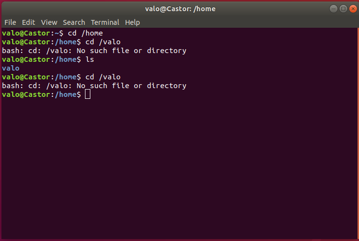

Linux shell¶
O shell é o interpretador de comandos dos sistemas tipo Unix (Unix-like). Na realidade, o shell é apenas um arquivo executável armazenado em /bin, como por exemplo, o Bash em /bin/bash. Alguns exemplos de shell:
- Bourne Shell
- C-shell
- Tsch
- Ksh
- Bash
- Dash
- Zsh
- Fish
O shell padrão do sistema é referenciado pelo link /bin/sh, e pode ser encontrado executando o comando:
file -h /bin/sh
# ou
readlink -f -- /bin/sh
Nas distribuições baseadas em Debian, /bin/sh é um link para o shell Dash, localizado em /usr/bin/dash. Ele é usado como shell não iterativo, ou seja, usado para executar arquivos de scripts em shell com o shebang #!/bin/sh. O shell iterativo nestas distribuições é o Bash, localizado em /usr/bin/bash.
Os shells, embora pequenos em tamanho, são programas sofisticados e poderosos que são usados para: execução de programas, substituição de variáveis e de nomes de arquivo, entrada/saída (I/O), redirecionamento (ou seja, envio de saída de um programa para um destino diferente de seu destino padrão, incluindo para ser usado como entrada para outro programa), controle do ambiente do usuário (por exemplo, alterando o shell ou o prompt do shell) e servindo como uma linguagem de programação (ou seja, um linguagem que pode ser usada para escrever scripts em shell). Shells em sistemas tipo Unix são incomuns por serem tanto uma linguagem de comando interativa quanto uma linguagem de programação.
O shell é usado de forma iterativa pelo usuário através de um terminal. Um terminal é um dispositivo de entrada/saída que permite a interação com um computador. Nos primórdios do Unix, um terminal era um dispositivo chamado teletipo (em inglês, teletypewriter), identificado na forma abreviada como tty.
Na terminologia Unix, um tty é um tipo particular de arquivo de dispositivo que implementa uma série de comandos adicionais (ioctls - input/output control) além de leitura e escrita. Portanto, o arquivo que representa um terminal é, tradicionalmente, chamado de arquivo tty e são localizados no diretório /dev. De forma geral, podemos dizer que terminal é sinônimo de tty.
Alguns ttys são fornecidos pelo kernel para acesso a dispositivos de hardware, como por exemplo, uma interface serial. Outros ttys, são fornecidos para acesso a versões virtuais de um terminal físico. No modo de texto, onde temos somente interface de linha de comando (CLI), estes terminais virtuais costumam ser chamados de consoles virtuais. No modo gráfico (GUI), onte estes terminais estão sendo executados em janelas, estes terminais virtuais são chamados de pseudo-ttys e são fornecidos por programas denominados emuladores de terminal. Alguns exemplos de emuladores de terminal:
- Termite
- Terminator
- Tmux
- Gnome Terminal
- Xterm
- PuTTy
- KiTTy
Tipos de terminais e seus arquivos de dispositivo
pseudo-tty- Surge quando o shell é aberto num ambiente gráfico, como por exemplo, ao abrir um emulador de terminal. Normalmente os usuários veem esse como pts/x onde X é um número, definido pela ordem em que diversos usuários logaram na máquina. Se o sistema pertence á 1 pessoa, este será o pts/1.
tty- Um terminal virtual que surge no comando
CTRL + ALT + F1na maioria dos sistemas tipo Unix. Também são conhecidos como consoles virtuais. São em tela cheia e exibem o sistema na tela. Sua numeração começa em 1, pois o tty0 é quem faz a comunicação direta entre sistema e placa de vídeo e não aparece para o usuário. Por exemplo, tty1, tty2, etc. ttyS- Usado para comunicar com o sistema via portas seriais RS-232. Praticamente não são mais utilizadas devido ao uso atual das portas USB. São numeradas como ttyS1, ttyS2, etc.
Para saber qual o arquivo de dispositivo do terminal atual, execute um dos comandos:
tty
who
Reservas de terminais
Normalmente é possível alternar entre os diversos TTY usando os comandos CTRL + ALT + F(1-6), enquanto F7 e F8 representam os terminais reservados para o servidor gráfico, como o XOrg ou Wayland.
Sob "o mesmo teclado, mouse e monitor" é possível logar até 7 ou 8 usuários dependendo da distribuição Linux. Porém com a conexão remota via SSH, é possível até 4096 usuários simultâneos logados e usando o sistema
Os terminais virtuais executam o shell que por sua vez disponibiliza um prompt de shell, também conhecido como prompt de comando que é um caractere ou conjunto de caracteres no início da linha de comando que indica que o shell está pronto para receber comandos. Geralmente é, ou termina com $, ou # no caso de ser um usuário administrativo (root).
De certa forma, podemos dizer os terminais virtuais apenas fornecem uma interface de I/O para que o usuário forneça os comandos para o prompt de comando, e visualize as saídas geradas por estes comandos. O histórico de entradas e a opção para auto completar comandos, também são funcionalidades fornecidas pelo shell.

Para saber qual o shell está sendo executado por um terminal, basta executar o comando:
echo $SHELL
Shell script¶
Shell scripts ou scripts em shell são programas curtos escritos em uma linguagem de programação shell que serão interpretados por um shell. Eles são extremamente úteis para automatizar tarefas em sistemas tipo Unix. Um script em shell geralmente é criado para sequências de comandos nas quais o usuário precisa usar repetidamente para economizar tempo.
Como outros programas, o script em shell pode conter parâmetros, variáveis, estruturas de repetição, estruturas de condição, comentários, subcomandos, entre outros recursos. Um arquivo contendo um script em shell, geralmente possui a extensão .sh. Exemplo de um script em shell para o shell Bash:
#!/bin/bash
directory="./mytest"
if [ -d $directory ]; then
echo "Directory exists"
else
echo "Directory does not exists"
fi
Conclusão¶
Um emulador de terminal ou console virtual executa o shell que por sua vez oferece ao usuário meios de interagir com o sistema operacional através de comandos em forma de texto. Isto possibilita uma gama de possibilidades, desde redirecionar a saída de um comando como parâmetro de entrada para outro, até criar sequências de comandos ou até mesmo programas, permitindo que o usuário automatize até tarefas mais robustas. Podemos dizer que scripts em shell são a melhor maneira de automatizar tarefas diárias em sistemas tipo Unix.
Referências¶
- http://www.linfo.org/shell.html
- http://www.linfo.org/terminal_window.html
- http://www.linfo.org/console.html
- https://unix.stackexchange.com/questions/4126/what-is-the-exact-difference-between-a-terminal-a-shell-a-tty-and-a-con
- https://askubuntu.com/questions/506510/what-is-the-difference-between-terminal-console-shell-and-command-line
- https://unixuniverse.com.br/artigo/tty-teletypewriter
- https://searchdatacenter.techtarget.com/definition/shell-script